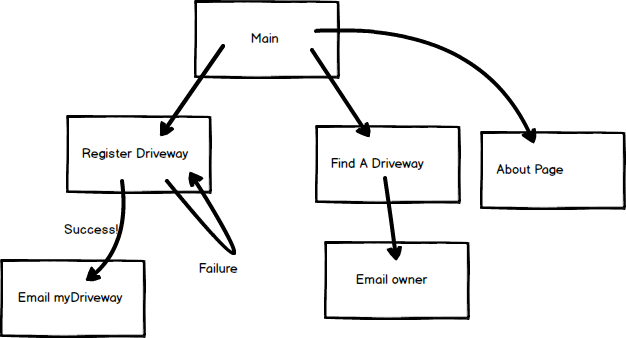
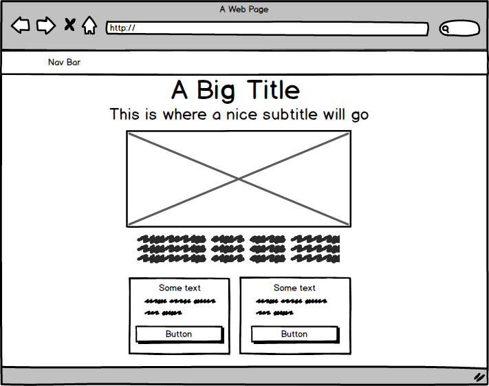
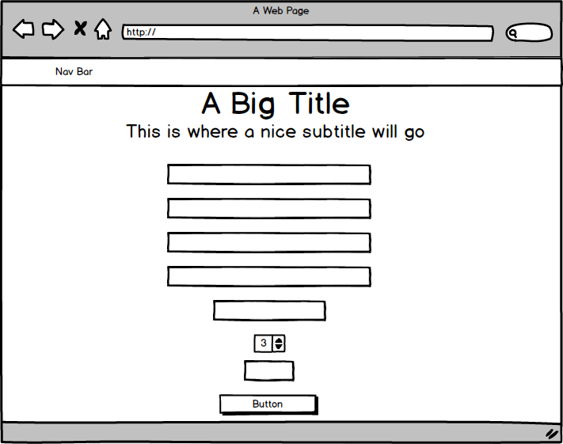
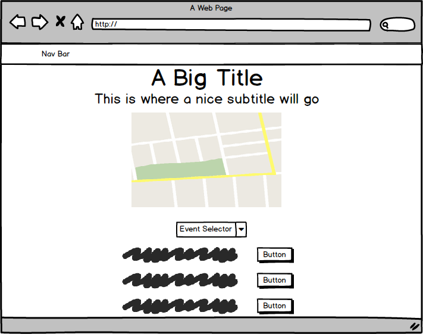
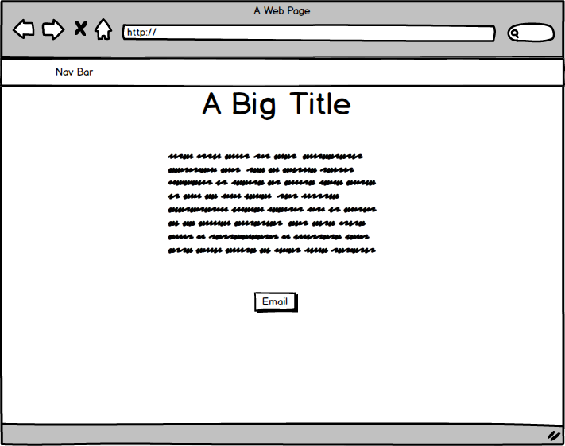
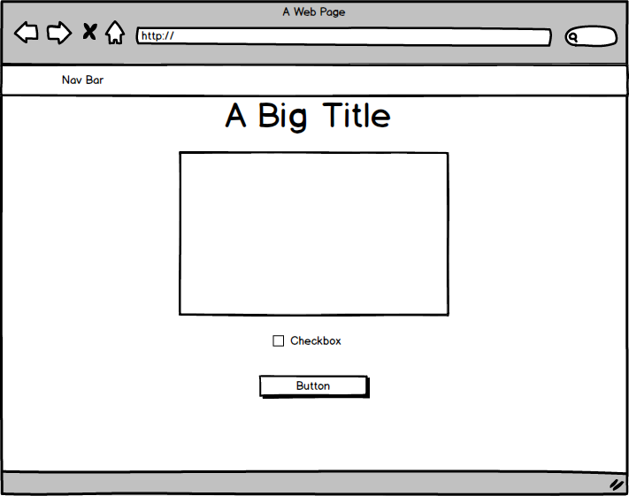

This is the initial tree layout for the entire myDriveway site. I created this tree to help me understand right from the start how many pages I would need to build. This greatly helped me manage my time well and keep the project organized. I used Balsamiq Mockups 3 to create all of the below wireframes, including this tree.
Here is the original layout for the myDriveway home page. It looks a bit different than the site does now as my regular updates to the site deviated away from this original mockup. I found that the large title and subtitle on the main page pushed the content below it too far down the page, so I opted to put the main title in the navigation bar with some nice styling. This allowed for the user to see all of the important links on a standard desktop screen without having to scroll down.
Below is the original layout for the driveway registration page. You will notice on the live page that the main title is again in the navigation bar (this is now standard across all the pages). In order to make the form more seamless, the input sections are now all aligned with the label on top of each input. I also added a dropdown so the user can select which event they are registering their driveway for.
Below is a modified mockup from the original layout I decided against. Originally, I was going to have each driveway location plotted in its own Google Map, but I quickly realized it was very difficult for the user to compare the location of an open driveway to the others. Thus, I opted to create one Google Map where all the driveways would be marked.
This is the simple About page mockup. Its sole purpose is to allow the user to navigate to my personal website to check out my other projects.
Below is the mockup for a disclaimer page that is currently not live. When I decide to scale the website and have a better understanding of the legal aspects that play into this type of idea, I will write a detailed disclaimer that users will have to agree to. I intend to have a disclaimer page before you can register a driveway and before you can search for a driveway. It will have a checkbox for the user indicate that they agree to the policy, as well as a "continue" button and a "disagree" button.
One of my main goals is to learn how to develop mobile applications. I created these initial mobile wireframes for this application so I will be ready to bring myDriveway to mobile devices.